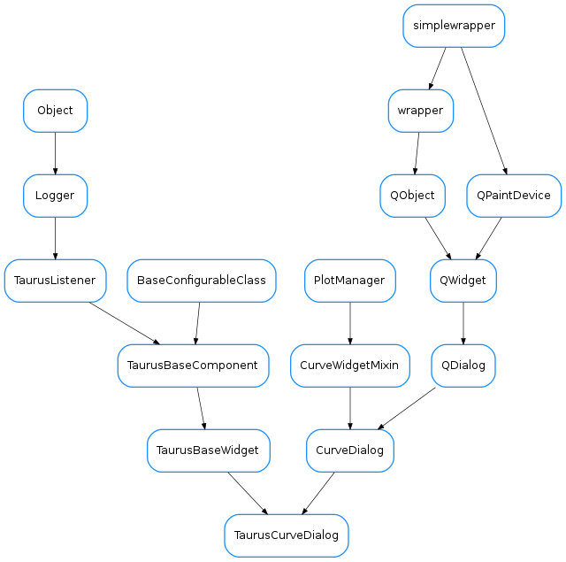

TaurusCurveDialog¶

-
class
TaurusCurveDialog(parent=None, designMode=False, toolbar=True, **kwargs)[source]¶ Bases:
guiqwt.plot.CurveDialog,taurus.qt.qtgui.base.taurusbase.TaurusBaseWidgetA taurus dialog for showing 1D data. It behaves as a regular
guiqwt.plot.CurveDialogbut it also offers the expected Taurus interface (e.g. setting models, save/apply configs, drag&drops,...)See also
TaurusCurveWidget-
addModels(modelNames)[source]¶ Creates TaurusCurveItems (one for each model in modelNames) and attaches them to the plot.
Note
you can also add curves using
add_items().addModels()is only a more Taurus-oriented interface.add_items()gives you more control.Parameters: modelNames ( sequence<str> orstr) – the names of the models to be plotted. For convenience, string is also accepted (instead of a sequence of strings), in which case the string will be internally converted to a sequence by splitting it on whitespace and commas. Each model can optionally be composed of two parts, separated by “|” indicating X and Y components for the curve. If only one part is given, it is used for Y and X is automatically generated as an index.See also
add_item()
-
model¶ reimplemented from
TaurusBaseWidget
-
modelChanged¶
-
modifiableByUser¶ whether the user can change the contents of the widget
Return type: boolReturns: True if the user is allowed to modify the look&feel
-
setModel(modelNames)[source]¶ Removes current TaurusCurveItems and adds new ones.
Parameters: modelNames ( sequence<str> orstr) – the names of the models to be plotted. For convenience, a string is also accepted (instead of a sequence of strings), in which case the string will be internally converted to a sequence by splitting it on whitespace and commas. Each model can optionally be composed of two parts, separated by “|” indicating X and Y components for the curve. If only one part is given, it is used for Y and X is automatically generated as an index.See also
-